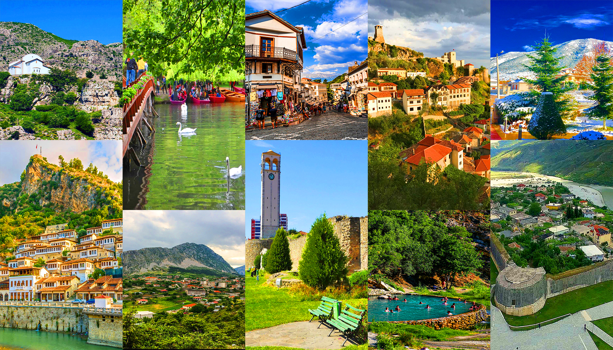

Populaire
15 jours au pays des Aigles
Trek inoubliable au cœur des Alpes albanaises, nuits en refuges, baignades dans des lacs d'altitude et rencontres avec les communautés montagnardes.
Plage
Alpes
Voir itinéraire